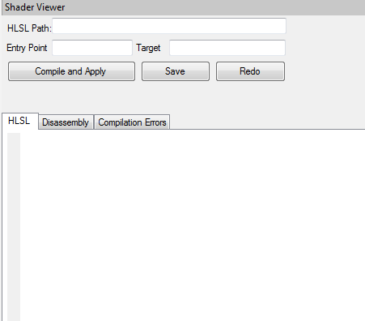
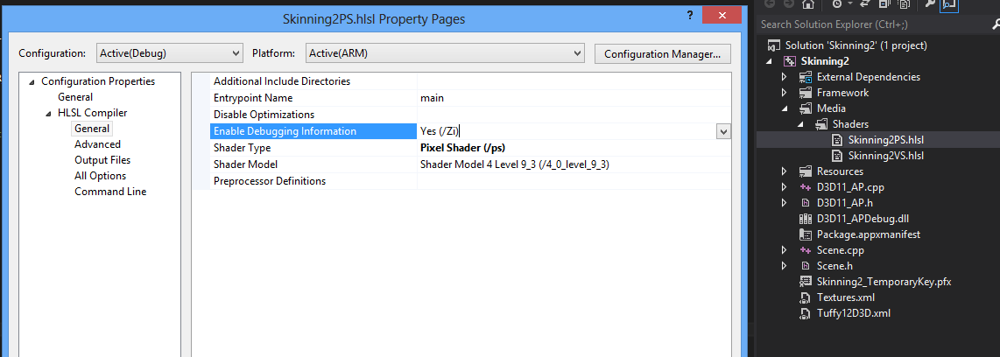
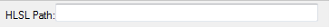
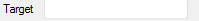
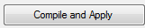

The Shaders Viewer displays shaders belonging to the currently selected program from the Buffer View.

Pre requisite:
Before running the app, please make sure the shader was built with the "Enable Debugging Information" set.

Toolbar options:

This text box displays the HLSL file path.
This button opens a file explorer which can be used to select and open a shader file.
This text box displays the entry point function for the shader. Please enter the appropriate function here before compiling the shader.

Target is used to tell the compiler what shader model to use for compilation.
A list of targets can be found here.
Examples:
Vertex Shader: vs_1_1, vs_2_0, vs_2_a, vs_2_sw, vs_3_0, vs_3_sw, vs_4_0, vs_4_1
Pixel Shader: ps_2_0, ps_2_a, ps_2_b, ps_2_sw, ps_3_0, ps_3_sw, ps_4_0, ps_4_1
Texture Shader: tx_1_0
Geometry Shader: gs_4_0, gs_4_1
Effect (may contain any combination of vertex, pixel and geometry shaders): fx_2_0, fx_4_0, fx_4_1

Once you are done making changes to the hlsl code, hit this button to compile the shader.
Once compilation is complete, the "Compilation Errors" tab should come in focus displaying any errors during compilation.
If no errors are found, the new shader is applied to the playback window.

Hit this button to open a file explorer and save the new hlsl code in a file.
Redo button overwrites the hlsl code changes and reverts back to the original shader code.